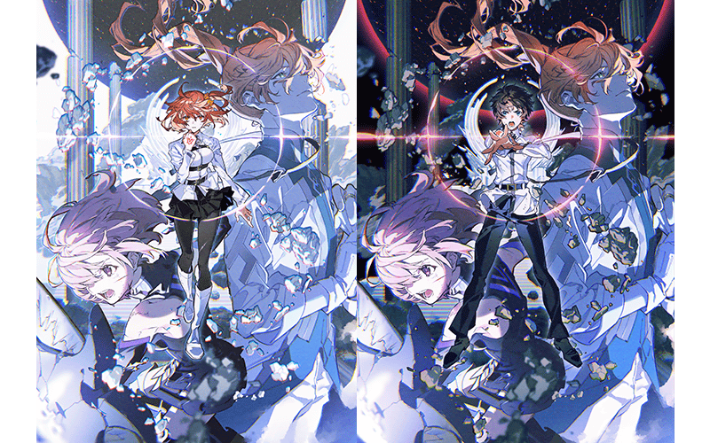

為了記念舞台劇「Fate/Grand Order THE STAGE -冠位時間神殿所羅門-」的公演，舉辦『「Fate/Grand Order THE STAGE -冠位時間神殿所羅門-」公演記念宣傳活動』！
◆舉辦期間◆
2020年10月9日(五) 17:00～10月30日(五) 22:59

「Fate/Grand Order THE STAGE -冠位時間神殿所羅門-」
立川公演(預演)
公演日:2020年10月18日(日)
劇場:TACHIKAWA STAGE GARDEN
・票券一般販賣(先行販賣)
受付期間:2020年10月10日(六) 8:00～
国際フォーラム公演
公演日:2020年10月24日(六)～10月30日(五)
劇場:東京国際フォーラム ホールC
・票券一般販賣(先行販賣)
受付期間:2020年10月17日(六) 8:00～
官方網站:https://stage.fate-go.jp/
官方推特:@fgothestage
為了記念舞台「Fate/Grand Order THE STAGE -冠位時間神殿所羅門-」的公演，實施公演記念特別登入獎勵。
在下述期間中合計登入8次(1天算1次)的話，贈送最多黃金果實3個與聖晶石5個！
◆舉辦期間◆
2020年10月10日(六) 3:00～10月18日(日) 2:59
※在舉辦期間內合計8天內登入的話，可領取所有的登入獎勵。
◆贈送對象◆
2020年10月17日(六) 2:59前通過「特異點F 炎上汙染都市 冬木」的御主對象
※上述時間前，在管理室(ターミナル)畫面的關卡橫幅必須要有「CLEAR」的文字顯示。
| 登入次數 | 贈送內容 | |
|---|---|---|
| 第1次 |

|
黃金果實 1個 |
| 第2次 |
|
黃金果實 1個 |
| 第3次 |
|
黃金果實 1個 |
| 第4次 |

|
聖晶石 1個 |
| 第5次 |
|
聖晶石 1個 |
| 第6次 |
|
聖晶石 1個 |
| 第7次 |
|
聖晶石 1個 |
| 第8次 |
|
聖晶石 1個 |
※登入獎勵會在每天3:00配發。 ※合計8天內能領取，但根據成為贈送對象的時間點，可能無法到此上限。
下述的期間中，以「Fate/Grand Order THE STAGE -冠位時間神殿所羅門-」關聯的一部份從者做為對象，在進行從者的強化時，大成功(經驗值2倍加成)・極大成功(經驗值3倍加成)的發生率以期間限定變成2倍！
務必藉此機會強化「Fate/Grand Order THE STAGE -冠位時間神殿所羅門-」關聯的10位從者吧！
◆舉辦期間◆
2020年10月9日(五) 17:00～10月30日(五) 22:59
◆對象從者◆
| 職階 | 稀有度 | 從者名 |
|---|---|---|
| Saber | ★★★★ | 蘭斯洛特 |
| Archer | ★★★★★ | 吉爾伽美什 |
| Lancer | ★★★★★ | 恩奇杜 |
| Rider | ★★★★★ | 奧茲曼迪亞斯 |
| Caster | ★★★★★ | 梅林 |
| ★★★★★ | 李奧納多・達文西 | |
| ★★★★ | 吉爾伽美什 | |
| ★★★ | 庫・夫林 | |
| Berserker | ★★★★★ | 庫・夫林〔Alter〕 |
| Shielder | ★★★ | 瑪琇・基利艾拉特 |